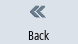

Operating areas/operating modes
The user interface consists of different windows featuring eight horizontal and eight vertical softkeys.
You operate the softkeys with the keys next to the softkey bars.
You can display a new window or execute functions using the softkeys.
The operating software is sub-divided into six operating areas (machine, parameter, program, program manager, diagnosis, startup), three operating modes and four functions (JOG, MDI, AUTO, TEACH IN, REF. POINT, REPOS, single block).
Changing the operating area
 | Press the <MENU SELECT> key and select the desired operating area using the horizontal softkey bar. |
You can call the "Machine" operating area directly using the key on the operator panel.
 | Press the <MACHINE> key to select the "machine" operating area. |
Changing the operating mode
You can select a mode or function directly with the keys on the machine control panel or the vertical softkeys in the main menu.
General keys and softkeys
 | When the symbol appears to the right of the dialog line on the user interface, you can change the horizontal softkey bar within an operating area. To do so, press the menu forward key. The  symbol indicates that you are in the expanded softkey bar. symbol indicates that you are in the expanded softkey bar. Pressing the key again will take you back to the original horizontal softkey bar. |
 | Use the ">>" softkey to open a new vertical softkey bar.
|
| | Use the "<<" softkey to return to the previous vertical softkey bar. |
|  | Use the "Return" softkey to close an open window.
|
 | Use the "Cancel" softkey to exit a window without accepting the entered values and return to the next highest window. |
 | When you have entered all the necessary parameters in the parameter screen form correctly, you can close the window and save the parameters using the "Accept" softkey. The values you entered are applied to a program. |
 | Use the "OK" softkey to initiate an action immediately, e.g. to rename or delete a program. |